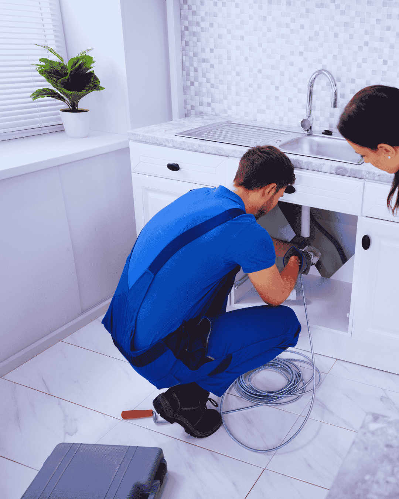

Garbage disposal repair in Boynton Beach is a quick job when the unit is jammed and a replacement job when the motor or housing has gone. We can tell which within a few minutes of looking at it. We run garbage disposal repair and installation from licensed plumbers in Boynton Beach and across the county, including Ocean Ridge and Palm Springs.
A disposal that hums but will not turn is jammed, and the impellers usually free up with a hex wrench from underneath. A disposal that is silent has tripped its reset or lost power. A disposal dripping from the bottom seam has a failed internal seal, and that one cannot be repaired.
We also fix the plumbing around it, which is often the real problem. A poorly pitched drain arm or a dishwasher hose without a high loop will keep clogging no matter how good the disposal is.

Warning signs
Garbage Disposal Symptoms and What Each One Means
The sound the unit makes tells you most of what you need to know.
- Humming with no grinding action, which means a jam
- No sound at all, usually a tripped reset or bad switch
- Water dripping from the bottom of the unit
- Persistent drain odor even after cleaning
- Loud metallic rattling during operation
- Water backing up into the second sink basin
- Frequent resets needed to keep it running
- Visible rust on the housing or mounting ring
A leak from the bottom seam means the internal seal failed and water is in the motor. That unit needs replacement, not repair.
What the visit includes
Garbage Disposal Repair and Replacement Services
We diagnose the unit and the drain plumbing together, because one often causes the other.
Jam clearing
Impellers freed, foreign objects removed, and the chamber checked for damage before restart.
Electrical check
Reset button, switch, outlet and wiring tested so a dead unit is not replaced for no reason.
Drain correction
Trap arm pitch, dishwasher high loop and tailpiece checked and corrected to stop repeat clogs.
New unit install
Right-sized horsepower for your household, mounted with a fresh flange, sealed and leak tested.
Disposal jammed or leaking?Call for same-visit garbage disposal repair with the drain line checked too.
Sizing and selection
Choosing a Replacement Garbage Disposal That Lasts
Horsepower and grind design matter far more than the brand name on the housing.
Match horsepower to the kitchen
A half horsepower unit suits a light-use kitchen or a single occupant. Three quarter horsepower handles a normal family kitchen comfortably. A full horsepower unit is worth it for heavy cooking households, because more power means fewer jams and finer particles leaving the chamber.
Grind stages
Multi-stage grinding produces smaller particles, which is the real benefit in homes with older cast iron kitchen branches. Finer output is far less likely to build a blockage a few feet down the line.
Materials
Stainless steel grind components resist corrosion in hard water. Galvanized components in budget units rust and eventually seize.
Continuous or batch feed
Continuous feed with a wall switch is standard and convenient. Batch feed requires a stopper to operate, which is a genuine safety benefit in a home with young children.
Noise insulation
Insulated housings make a noticeable difference in an open-plan kitchen, and the upcharge is modest.

Boynton Beach conditions
Disposals, Grease and Older Boynton Beach Kitchens
A disposal does not eliminate grease, it just sends it further down the line in smaller pieces. In homes with older cast iron kitchen branches, that grease coats an already rough pipe wall and builds a blockage a few feet out. This is why a working disposal and a chronically slow kitchen sink so often appear together.
Condo and townhome kitchens add another wrinkle. Shared stacks in multi-unit buildings around Boynton Beach mean one neighbor's habits can back up into your sink. If your kitchen drain gurgles when nobody upstairs is home, the stack is the suspect and the disposal is innocent.
Practical advice for local kitchens: keep grease, coffee grounds, rice, pasta and fibrous vegetable skins out of the unit entirely, and run cold water for 20 seconds after every use.
Care
Garbage Disposal Care and Kitchen Drain Habits That Prevent Clogs
A disposal does not eliminate food waste. It makes it smaller and sends it into your drain line, which is why habits matter as much as the unit.
What should never go in
Grease and cooking oil, coffee grounds, eggshells, rice, pasta, potato peels, celery and other fibrous vegetables, bones and fruit pits. Grease is the worst of them, because it coats the pipe wall downstream and collects everything that follows.
Use cold water, not hot
Cold water keeps fats solid so they get ground and carried out rather than melting and coating the line. Run it for twenty seconds after the grinding stops.
Cleaning it properly
Ice cubes and a little coarse salt scour the chamber. Citrus peel handles odor. Skip chemical drain cleaner entirely, because it sits on the metal components and destroys seals.
The dishwasher high loop
The dishwasher drain hose must rise to a high loop before entering the disposal. Without it, dirty water siphons back. This is one of the most common installation faults we correct.
Older Boynton Beach kitchens
In condos and townhomes with shared drain stacks, a neighbor's habits can back up into your sink. If your kitchen gurgles when nobody upstairs is home, suspect the stack rather than your disposal.
Pricing
Garbage Disposal Repair and Installation Cost
Jam clearing and electrical diagnosis are quoted as a flat service. Replacement is quoted as one number that includes the unit, the mounting hardware, disposal of the old one and a leak test.
Horsepower matters more than brand. A 1/2 hp unit suits a light-use kitchen. A busy family kitchen should be on 3/4 hp or better.
- Repair or replace. A jam, reset or a drain fitting, versus a failed motor seal leaking from the seam.
- Drain condition. A correctly pitched trap arm, versus a flat or badly pitched arm that must be reworked.
- Unit size. A like-for-like replacement, versus upsizing, which can need electrical or mounting changes.
- Electrical. An existing switched outlet, versus new wiring or a switch that has to be added.
- Dishwasher tie-in. An existing high loop and knockout, versus correcting a missing high loop causing backflow.
No surprises at the end. A range on the phone, a written flat price at the door, and your approval before anything starts. (833) 567-2788.
Before you call
Three Checks Before You Replace a Disposal
Most dead disposals are not dead. Work through these before buying a new unit.
- Press the red reset button on the underside of the unit.
- If it hums, cut the power and free the plate with the hex key in the bottom socket.
- Check the breaker and, if fitted, the switched outlet under the sink.
- Look for a drip at the bottom seam, which is the one fault that cannot be repaired.
One thing not to do: Never put your hand into the chamber, and never run a disposal to clear a blocked drain. If the sink is backing up, the drain is the problem, not the unit.
Urgency
When Does a Disposal Problem Need a Plumber Now?
A jammed unit can usually wait. Call promptly if:
- Water is backing up into the sink and will not clear.
- The unit is leaking from the body onto the cabinet floor.
- There is a burning smell or the breaker trips when it runs.
- The dishwasher is backing up through the disposal connection.
If any of those describe what you are seeing, call (833) 567-2788 now rather than booking online. Emergency calls are moved to the front of the queue.
FAQs
Garbage Disposal FAQs
Why does my disposal hum but not spin?
It is jammed. The motor is trying to turn locked impellers. Cut power first, then it can usually be freed from underneath.
How long should a disposal last?
Eight to twelve years with normal use. Hard water and grease shorten that considerably.
Can I use drain cleaner in a disposal?
No. It sits on the metal components and damages seals. Ice cubes and cold water do a better cleaning job.
Is a more powerful disposal worth the money?
In a family kitchen, yes. More horsepower and multiple grind stages mean fewer jams and finer particles in the drain line.
Can you install a disposal where there was not one?
Usually yes, if there is an outlet and switch nearby or one can be added. We check both before quoting.
Why does my sink still back up after a new disposal?
Because the disposal was probably never the problem. A trap arm with too little fall, a partially blocked branch line or a missing dishwasher high loop will back the sink up regardless of which unit is fitted. That is why we look at the drain and the unit together.
Related plumbing services
Kitchen Plumbing Services Related to Disposal Repair
What tends to come up next, once this job is understood.
Drain Cleaning
If the sink still backs up with a new unit fitted, the problem was never the disposal and the branch line needs clearing.
Kitchen and Bathroom Plumbing
A disposal swap during a sink or counter change is a different job to replacing one under an existing setup.
Faucet & Fixture Installation
The cabinet is already open, so replacing the faucet, stops and supply lines at the same time costs very little extra.
View all 16 plumbing services →
Garbage Disposal Near You in Palm Beach County
- Garbage Disposal in Delray Beach
- Garbage Disposal in Lake Worth Beach
- Garbage Disposal in Lantana
- Garbage Disposal in Boca Raton
- Garbage Disposal in Wellington
- Garbage Disposal in Greenacres
- Garbage Disposal in Hypoluxo
- Garbage Disposal in Ocean Ridge
- Garbage Disposal in Manalapan
- Garbage Disposal in Palm Springs
- Garbage Disposal in West Palm Beach
- Garbage Disposal in Highland Beach
Disposal jammed or leaking?
Same-visit garbage disposal repair and replacement across Boynton Beach, with the drain line checked too.